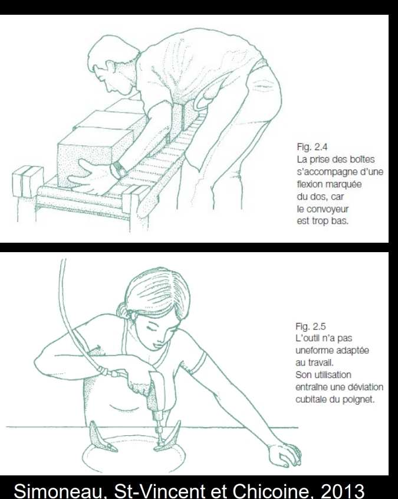
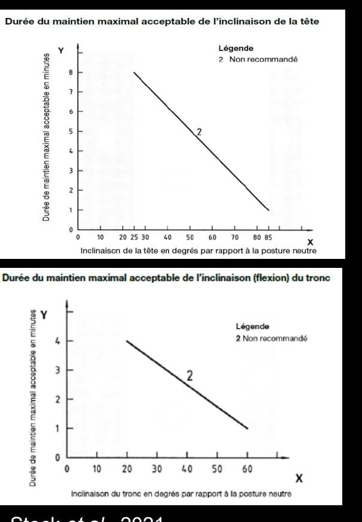

Postures contraignantes
Une posture devient contraignante lorsque les structures articulaires sont étirées ou comprimées de façon excessive, ou lorsqu'un effort important est nécessaire pour la maintenir. Les travailleurs exposés à des postures contraignantes ont environ 3 fois plus de risques de développer des TMS chroniques aux épaules et au cou, et près de 4 fois plus de risques au niveau du dos. C'est le facteur de risque Biomécanique le plus visible et le plus accessible à l'observation.
Table des matières
- Définition
- Trois mécanismes lésionnels
- Modulateurs du risque
- Postures à risque
- Durée d'exposition
- Stratégies d'intervention
- Application terrain
- Ressources
Définition
Pour chaque articulation, on peut définir une posture neutre où les contraintes sur les structures sont minimales. Chaque articulation possède aussi une limite d'amplitude de mouvement au-delà de laquelle le mouvement n'est plus possible.
Une posture devient contraignante lorsque
- Les structures articulaires sont tirées.
- Les structures articulaires sont comprimées.
- Un effort considérable est nécessaire pour maintenir la position.
Plus une posture s'approche des limites de l'amplitude articulaire, plus elle est considérée comme contraignante. Voir Articulations pour les amplitudes par articulation.
Amplitudes de confort : positions au-delà desquelles le risque de TMS augmente considérablement.
Trois mécanismes lésionnels
| Mécanisme | Effet sur les tissus |
|---|---|
| Étirement | Mise en tension excessive des ligaments, capsules, tendons |
| Compression | Pression locale sur tendons, nerfs, vaisseaux, disques |
| Effort statique | Diminution du flux sanguin, fatigue musculaire, microlésions |
Modulateurs du risque
Une posture contraignante n'est pas toujours problématique. Trois modulateurs déterminent le danger
| Modulateur | Description |
|---|---|
| Intensité | Plus la posture est extrême (proche du maximum articulaire), plus le risque est élevé |
| Fréquence | Nombre de fois où la posture est adoptée dans un intervalle de temps |
| Durée | Durée dans le cycle de travail, durée totale dans le quart, présence simultanée d'autres facteurs |
Postures à risque
Postures statiques
Le maintien statique d'une posture, même peu extrême, génère de la fatigue musculaire (contractions isométriques, voir Système musculaire).
Postures contraignantes communes en mine
| Posture | Région touchée | Exemple minier |
|---|---|---|
| Accroupie (squat) | Genoux, hanches, dos | Pose de tirants, travaux au sol en chantier bas |
| À genoux | Genoux | Boulonnage en chantier bas |
| Bras au-dessus de la tête | Épaule, cervical | Forage de toit, boulonnage de plafond |
| Tronc en flexion | Lombaire | Manutention (pour toi) au sol, ramassage de boulons |
| Tronc en torsion | Lombaire, facettaires | Manutention asymétrique, sortie de cabine |
| Cou en hyperextension | Cervical | Surveillance en hauteur, inspection sous équipement |
| Poignet en flexion ou extension forcée | Poignet | Préhension d'outils, manipulation de pièces |
| Pince digitale prolongée | Poignet, doigts | Travaux fins, soudage |
{kind=link}

Toucher l'image pour l'agrandirDurée d'exposition
Plus une posture est extrême, moins elle devrait être maintenue longtemps.
La norme ISO 11226 indique les temps de maintien tolérables pour différentes postures contraignantes statiques.
{kind=link}

Toucher l'image pour l'agrandirÀ titre indicatif
- Postures (pour toi) très extrêmes : tolérables environ 2 minutes maximum.
- Postures modérément contraignantes : tolérables quelques dizaines de minutes avec récupération.
- Posture neutre : sans limite spécifique sauf cumul de statisme.
Stratégies d'intervention
Agir sur les déterminants
Pourquoi adopter une posture contraignante ?
- Aménagement de l'environnement de travail (hauteur, espace).
- Forme et position des outils.
- Nature des tâches à réaliser.
Les interventions portent donc surtout sur l'adaptation de l'environnement physique et des dispositifs techniques.
Limiter la durée d'exposition
- Rotations de tâches.
- Pauses programmées.
- Allocation de temps de récupération adéquats.
Limiter la présence concomitante d'autres facteurs
Une posture contraignante combinée à de la force et à des Vibrations multiplie le risque. Éliminer un facteur à la fois.
Application terrain
Les postures contraignantes sont omniprésentes en chantier souterrain.
Causes principales en mine
- Hauteur de plafond variable (2 à 5 m), parfois imposant la flexion du cou ou du tronc.
- Sol inégal (gravats, rails, flaques) : équilibre instable.
- Espaces restreints (galeries étroites, recoins).
- Position et orientation des outils (foreuses, écailleurs).
Postes typiquement contraignants
| Poste | Postures (pour toi) problématiques |
|---|---|
| Foreur, profil RPS et leadership de chantier jumbo | Cou en extension prolongée, bras élevés |
| Boulonneur de toit | Bras au-dessus de la tête, cervical en extension |
| Aide-foreur, profil RPS en chargement | Flexion-torsion répétée, accroupie |
| Mineur en chantier bas | À genoux, accroupi, tronc fléchi |
| Mécanicien sous machinerie | Bras au-dessus, dos en hyperextension |
Pistes d'intervention en mine
- Achat d'équipement avec ajustements anthropométriques (cabines, sièges, commandes).
- Plateformes de travail mobiles à hauteur ajustable.
- Outils sur support mécanique pour les travaux au plafond.
- Rotation de tâches dans le cycle de production.
- Aménagement d'aires de pause souterraines pour récupération.
Voir Analyse posturale pour les méthodes d'évaluation (RULA, REBA, OWAS).
Ressources
| Document | Type | Source |
|---|---|---|
| Cours SST 1162 - S2 - Postures contraignantes | Cours | UQAT |
| Norme ISO 11226 (postures statiques) | Norme | ISO |
| Méthodes RULA, REBA, OWAS | Outils | Voir Analyse posturale |
Articles wiki connexes
Pages qui pointent ici (20)
- 🏠 Wiki Ergonomie, mines Ergonomie
- 📖 Glossaire ergonomie Ergonomie
- 🚀 Démarrage rapide - Conseiller SST, ergonome Ergonomie
- 🚀 Démarrage rapide - Superviseur, contremaître Ergonomie
- Analyse posturale Ergonomie
- Anatomie et biomécanique du dos Ergonomie
- Articulations Ergonomie
- Biomécanique Ergonomie
- Conception ergonomique des postes Ergonomie
- Contraintes Ergonomie
- Ergonomie (définition) Ergonomie
- Ergonomie du travail Ergonomie
- Facteurs de risque des TMS Ergonomie
- Manutention manuelle Ergonomie
- Outils d'évaluation ergonomique Ergonomie
- Système musculaire Ergonomie
- TMS (troubles musculosquelettiques) Ergonomie
- TMS par région anatomique Ergonomie
- Travail répétitif Ergonomie
- Travail sédentaire Ergonomie